Critically Evaluating Regression Analysis
Regression analysis is a tool for analyzing the relationship between variables. Experts who construct parametric models through least-squares regression are reaching into a flexible and powerful toolkit which allows them to estimate relationships and forecast values while also directly stating potential rates of error.
The construction of any model inevitably requires practitioners to make assumptions, and a model is only as reliable as the explicit and implicit assumptions it makes. Improperly applied regression analysis can yield sub-optimal or biased results.
For illustrative purposes, select data from the CDC's Chronic Disease Indicators database was collected. Data has been filtered to the 50 states, the District of Columbia and Puerto Rico. All analysis and figures were created in R, a popular open source statistics language. On our website, you'll also find a digital copy of this article, prepared data and its source code.
Suppose we wanted to predict the prevalence of adult obesity in a given state by measuring the percentage of adults who eat the recommended amount of fruits and vegetables. A simple mathematical relationship might be:
That is, the percentage of state 's population who will be overweight or obese is equal to plus times the percentage of state 's population with sufficient nutrition plus an error term. In this model, and are the coefficients to be estimated. This is referred to as a simple regression because there is only one independent variable. A "multiple regression" will add additional independent variables multiplied by their respective .
When least-squares[1] regression is used on the above formula, the following output is generated.
Figure 1: Simple Regression Output
##
## Call:
## lm(formula =
overweightObese.adult ~ fruitVegConsumption.adult,
## data = data)
##
## Residuals:
## Min 1Q
Median 3Q Max
## -6.4223 -1.1879
-0.0235 1.5730 4.6447
##
## Coefficients:
##
Estimate Std. Error t value Pr(>|t|)
## (Intercept) 76.61653
2.07943 36.84 < 2e-16 ***
##
fruitVegConsumption.adult -0.55294 0.08904 -6.21 1.03e-07 ***
## ---
## Signif. codes: 0
'***' 0.001 '**' 0.01 '*' 0.05 '.' 0.1 ' ' 1
##
## Residual standard
error: 2.408 on 50 degrees of freedom
## Multiple R-squared:
0.4354, Adjusted R-squared: 0.4241
## F-statistic: 38.56
on 1 and 50 DF, p-value: 1.032e-07
As you can see in Figure 1, and are estimated as 76.6 and -0.553, respectively. Substituting into the regression equation:
This means that in a state with no adults with proper fruit and vegetable consumption, we would expect to see 76.6% of the population overweight. With each additional percentage of the population with proper fruit and vegetable consumption, we would expect to see the percentage overweight decrease by 0.6%.
However, these values for the and parameters are (hopefully unbiased) estimates. The remaining figures on each row quantify the amount of uncertainty in the distribution.
The standard error provides the standard deviation of the sampling distribution. The t-value tells you the magnitude of the estimate relative to the standard error. It is equal to the estimate divided by the standard error.
The final column of the coefficient rows, labeled Pr(>|t|), is commonly reported as the "p-value." If the true value of the coefficient were equal to zero, then the p-value tells us the probability of obtaining the observed result. If the p-value is close to zero, as it is in both of these cases, then we can reject the respective "null hypotheses" that both coefficients are not equal to zero.
Because both p-values are smaller than 0.01, we can say that both coefficients are statistically significant at the 1% level.
Figure 2 presents the result graphically. Each dot represents a single data point. The thick line represents the best-fit regression line. The vertical distance between each point and the regression line is known as the residual, the difference between the fitted and actual data point.
Figure 2: Simple Regression Scatterplot
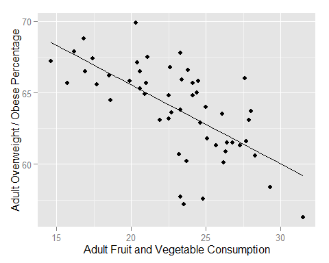
When evaluating a regression model, practitioners commonly focus on the figure -- an easily interpretable measure of goodness-of-fit. tells us the percentage of the dependent variable's variability which is explained by the model. In this example, our simple regression is able to explain 43.5% of the variation in adult obesity.
This simple model is far from perfect. In fact, there are numerous errors we'll diagnose and fix in the next section.
Our Simple Regression found that increasing the percentage
of adults who eat the recommended quantity of fruits and vegetables by decreases the
percentage of adults who are overweight or obese by 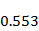
Omitted-variable bias occurs when a statistically significant independent variable is omitted which is correlated with an included independent variable.
This simple model does not take into account the percentage of adults who exercise regularly. Because there is a positive correlation between the number of adults who eat healthily and the number of adults who are physically active, the observed variable is allowed to noisily speak for both cases. Fruit and vegetable consumption is directly measuring the effect of a healthy diet and indirectly measuring the effect of exercise. If the two variables had a negative relationship, then the effect would travel in the other direction.
Fortunately, our dataset also includes the percent of adults who exercise regularly. Figure 3, presents all three variables in a Correlation Matrix. The three bottom-left panels present scatterplots, like in Figure 2. To determine which variables are represented in each scatterplot, follow the names on the main diagonal. For instance, the bottom left scatterplot has nutrition on the x-axis and obesity on the y-axis (just like Figure 2).
The three top-right present the correlation calculated between all combinations of variables. As we'd expect, there's a positive correlation between healthy eating and exercise and negative correlations between both measures and obesity.
Figure 3: Correlation Matrix
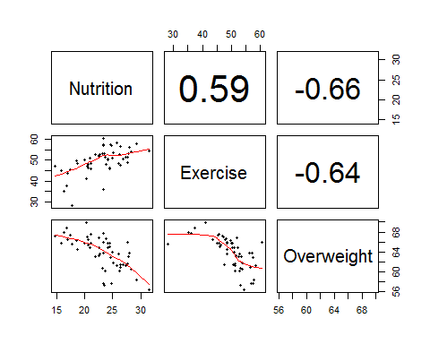
If we rerun our model to include both exercise and nutrition, the explained percentage of obesity increases and the percentage attributed to nutrition dramatically falls.
Figure 4: Multiple Regression Output
##
## Call:
## lm(formula =
overweightObese.adult ~ fruitVegConsumption.adult +
## active.adults,
data = data)
##
## Residuals:
## Min 1Q
Median 3Q Max
## -5.8629 -0.9288
0.2221 1.3944 4.2357
##
## Coefficients:
##
Estimate Std. Error t value Pr(>|t|)
##
(Intercept) 81.85676 2.55291 32.064 < 2e-16 ***
##
fruitVegConsumption.adult -0.36651 0.10169 -3.604 0.000732 ***
##
active.adults -0.19137 0.06147 -3.113 0.003089 **
## ---
## Signif. codes: 0
'***' 0.001 '**' 0.01 '*' 0.05 '.' 0.1 ' ' 1
##
## Residual standard
error: 2.223 on 49 degrees of freedom
## Multiple R-squared:
0.5286, Adjusted R-squared: 0.5094
## F-statistic: 27.48
on 2 and 49 DF, p-value: 9.931e-09
The figure has increased from 43.5% to 52.9%. Coefficients and measures are compared in Figure 5.
Figure 5: Result Comparisons
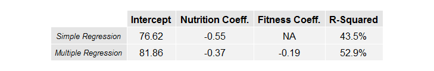
Our original model isn't bad, per se. In some instances, we won't have access to important hidden variables. If what we really care about is the forecasted result, then visible variables should be permitted to "speak for" unobserved variables. However, in some cases, we care more about the coefficients than we do the forecasted result. For instance, if you were hired to quantify the benefit of increasing vegetable consumption, then ignoring fitness will drastically color your results due to omitted-variable bias.
Even this expanded model likely leaves out important factors. Obesity likely also depends on a state's age profile, racial breakdown, socio-economic status levels and numerous other factors. In an effort to avoid omitted-variable bias, and in the presence of big data, it is tempting to include as many variables as possible in the result.
However, including too many independent variables leads to bad results due to overfitting. To illustrate, let's add another variable which likely has no effect on obesity: the percentage of adults who received a flu vaccine.
Figure 6: Overfitted Model Output
##
## Call:
## lm(formula =
overweightObese.adult ~ fruitVegConsumption.adult +
## active.adults +
fluVaccine.adult, data = data)
##
## Residuals:
## Min 1Q
Median 3Q Max
## -6.0559 -0.9581
0.1862 1.4530 4.3884
##
## Coefficients:
##
Estimate Std. Error t value Pr(>|t|)
## (Intercept)
81.23494 2.89046 28.105 < 2e-16 ***
##
fruitVegConsumption.adult -0.35499 0.10537 -3.369 0.00150 **
##
active.adults -0.21358 0.07778 -2.746 0.00846 **
##
fluVaccine.adult 0.02373 0.05024 0.472 0.63876
## ---
## Signif. codes: 0
'***' 0.001 '**' 0.01 '*' 0.05 '.' 0.1 ' ' 1
##
## Residual standard
error: 2.24 on 48 degrees of freedom
## Multiple R-squared:
0.5308, Adjusted R-squared: 0.5015
## F-statistic: 18.1
on 3 and 48 DF, p-value: 5.385e-08
With a p-value of 0.64, the flu-vaccine coefficient is statistically insignificant from zero. However, the value did increase from 52.9% to 53.1%, so the new variable had a measurable impact on the model.
is a nice metric because it is highly interpretable, but it would be a mistake to choose the model with the highest . At worst, a regression model will completely ignore a new independent variable. Therefore, will never decrease as models become more complicated, regardless of whether the new complications actually improve the model.
Other metrics such as 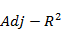
is just a measure of goodness-of-fit. It's nice when a model produces a good fit to the data on which it was trained, but the real challenge is in how well a model does when it is presented with new data.
Another approach to model-selection is cross validation. One performs cross validation by segmenting the dataset into "training data" and "test data." Parameters are estimated based only on the training data, and their predictions are judged on the testing data. This is an important test because overfit models underperform traditional models when they are tested out of sample.
The most extreme form of cross-validation is leave-one-out cross validation ("LOOCV"). In LOOCV, one data point is deemed the test set and the rest is used for training. The process is repeated until all data points have had a turn as the test set. Figure 7 presents measures of LOOCV (lower is better), AIC, AICc (like AIC but corrected for smaller datasets), BIC and . In all measures, the Multiple Regression is the best model we've tried so far.
Figure 7: Measures of Fit
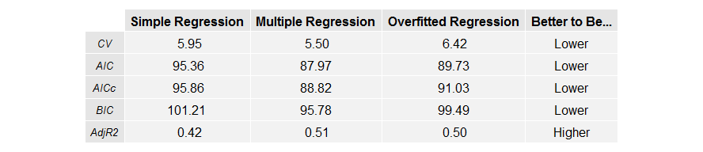
As shown in all measures of Figure 7, overfitting is a dangerous trap to fall into. Adding fitness decreased the CV measure by ~.45. Adding the flu vaccine to this increased the CV measure by 0.92, over twice as much. In regression analysis, simplicity and elegance are virtues. Sometimes, accuracy is achieved when there is nothing left to take away.
Turning our attention back to the scatterplots in Figure 3, a few data points jump out at us, especially the one with excessively low levels of exercise and relatively average weight. This observation corresponds to Puerto Rico. There are many reasons why Puerto Rico may be an outlier compared to the rest of the U.S. Depending on the nature of the analysis, it may be reasonable to exclude Puerto Rico as an outlier.
Figure 8 presents a comparison of the Multiple Regression model after the dataset is limited to the 50 states (excluding Puerto Rico and Washington D.C.).
Figure 8: Limiting Data to 50 States
Remarkably, the fitness coefficient increases in impact from -0.19 to -0.28! As you can see, least-squares regressions are very sensitive to outliers. Excluding two regions in our analysis increased the estimated impact by almost 50%.
A practitioner who utilizes least-squares regressions needs to ensure his dataset isn't plagued by outliers. There are alternatives to least-squares regressions which are more robust (ridge regressions and lasso regressions), but an analysis of them is beyond the scope of this paper.
Although it doesn't affect this dataset, it is also worth noting that regressions will give unreliable results if independent variables are very highly correlated with each other. This problem, known as multicollinearity, will make the coefficient estimates very sensitive to tiny changes in the data.
Least-squares regressions assume that there is a linear relationship between the dependent variable and independent variable(s). This means increasing independent variable by one unit will result in an expected increase of the dependent variable by , regardless of the current level of the independent or dependent variable.
This may not be relevant in many situations. For instance, diminishing returns could decrease an effect as an independent variable increases or compound growth could generate non-linear responses in the dependent variable.
To deal with challenges like these, practitioners often transform some of the variables. For instance, they may square an independent variable or take the natural log of the dependent variable.
Figure 9 presents several common transformations to either the independent or dependent variables. For all transformed models, the slope directly depends on either the current y or x value as well as the fitted parameters.
Figure 9: Common Transformations
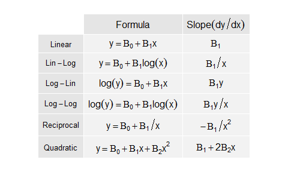
It is often helpful to plot independent and dependent variables in order to visually look for nonlinear patterns.
One can also look for patterns in the residuals, the difference between the fitted and actual values. If the residuals look like random noise, then we have created a good model. If there is a pattern to the residuals, then there is information our model isn't taking into effect. Figure 10 adds the 50-state residuals to the previous correlation matrix.
Figure 10: Correlation Matrix with Residuals
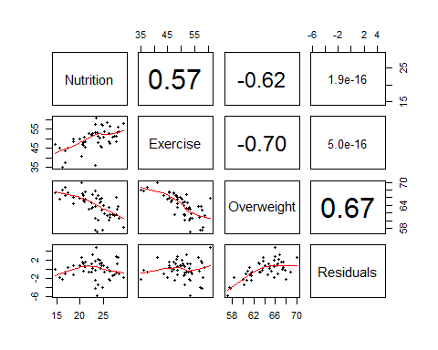
As you'll notice, residuals are often higher than zero for average nutrition and are often lower than zero for high nutrition and low nutrition. This pattern is indicative of non-linear effects.
Figure 11 displays goodness of fit statistics for nonlinear effects of nutrition. Nonlinear effects could potentially be added for exercise as well.
Figure 11: Measures of Fit
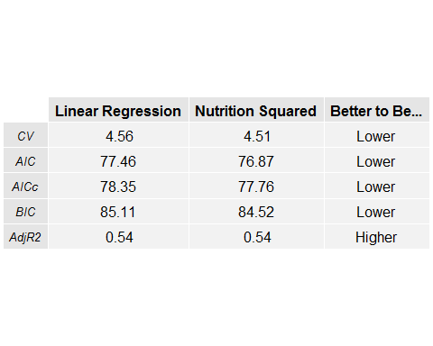
Another thing you should notice from the correlation matrices is that the variance in obesity increases as either nutrition or exercise increase. Graphically, the scatterplots look like a bundle of flowers grasped tightly at their stems. This effect is demonstrated in simulated data Figure 12.
Figure 12: Heteroskedasticity vs Homoskedasticity
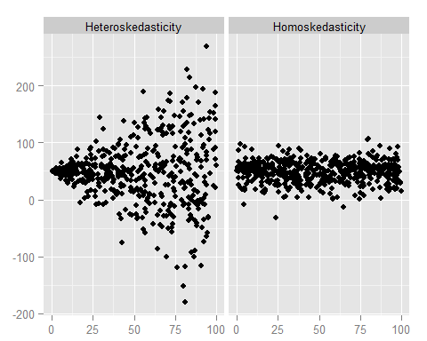
This is a common result when independent variables represent necessary but not sufficient conditions for the dependent variable to occur. If you don't exercise, then you're probably overweight. If you exercise, then you may or may not be overweight based on other factors. This results in a situation where the variance of the dependent variable changes as the independent variables change. In statistics, this is referred to as heteroskedasticity.
Heteroskedasticity is also common in financial time series. Some financial returns move through sustained periods of high variance, such as equity and commodity markets in late 2008.
You can perform ordinary least-squares regression in the presence of heteroskedasticity. However, many statistical tests assume homoskedasticity -- that variance is constant across all observations. In the presence of heteroskedasticity, the coefficient estimates will be reliable, but the standard error (and hence the t-stats and p-values) aren't reliable.
Fortunately, there are versions of these tests which are robust to heteroskedasticity. In this case, the heteroskedasticity isn't a serious problem. In other cases, heteroskedasticity can be indicative of a misspecified model.
Be careful when you observe heteroskedasticity, especially when you're performing your analysis in Excel and can't use robust statistical measures.
Often, regressions are used to analyze time series -- variables which changes over time. Properly accounting for the timing of data points can produce useful forecasts, like the aforementioned case study, but time series analysis can introduce new ways for regressions to fail. These issues will be discussed in depth in a future article.
Putting these steps together, we are left with the following model of the percentage of a state's population which is overweight or obese:
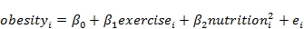
Subbing in beta estimates:
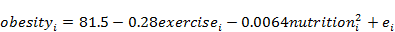
This is a good starting point, but it shouldn't be considered a finished analysis. Feel free to download this dataset and source code and attempt to take this analysis further. What happens when you add the cigarette usage? What does this tell you about what the other independent variables are measuring? What combinations of independent variables generate the lowest CV measure? Are any other data points potentially outliers? How would you model nonlinear effects in activity levels? These questions are left as an exercise to the reader.
[1]Least-squares regressions find the parameter values which minimize the squared difference between actual and fitted values of the dependent variable. According to the Gauss-Markov Theorem, estimates produced in this fashion will have the smallest variance of all linear and unbiased estimators under certain assumptions. Many of the errors specified in this paper occur because the underlying assumptions do not hold.